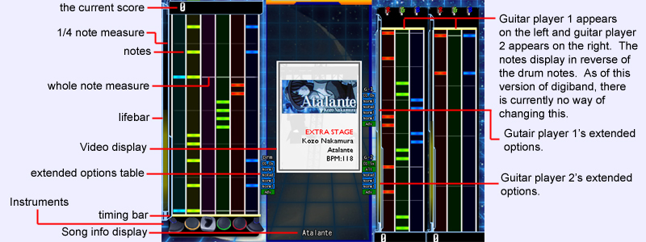

|  |
|
We're going to start assuming you already know how to activate each instrument as discussed earlier in this manual. After you choose your song you should see the game play screen like the one above. You should notice that each instrument is devided up into tracks. each note follows that track moving along with the measure bars. Hitting notes poorly or missing them will take away your life. While hitting notes accurately will raise your life, but not by much. Below will describe what you need to do with each note. How to play the drums Once the note reaches the timing bar you must be prepared to hit the corresponding drum with your drum stick, or press the corresponding key or button. You will notice that at times you may have to hit some notes multiple times in row, this is a drum roll. Drum rolls require to speed up your pace, then resume the pace you were taking before. Alot of times you will have to hit two notes at once, this will require use of both hands hitting each drum at the same time. You will also notice the 3rd instrument is a bass pedal, you will need to use either your left or right foot, depending on your setup to hit this pedal in cordination with your hands. If you are using a keyboard, it is recommended to lay out each instrument in a row. By default the instruments are z,x,c,v,b, and n. The names of these instruments are hihat, snare, bass, hitom, lotom, and cymbal. How to play the gutiar The guitar requires you to hit each note similar to the drums. you will want to wait until your note reaches your timing bar before hitting the note. The trick with the guitar is that it requires two motions instead of one. Just pressing the corresponding intrument, known as a fret for guitars, will not work. You will need to think ahead. The proper way to play, would be to hold the instrument/fret down, before the note reaches your timing bar. When the note reaches the timing bar, you will then need to strum your pick, strumming either up or down. At times you will see a long purple bar over all three notes. You will need to release all instruments/frets before strumming your pick on this note. This type of note is called an open pick note. Similar to the drums, you may also be required to hold 2 or even all 3 frets down before strumming your pick. The guitar also has a 'wailing' bonus. A note that doesn't count for or against you, just simply adds some points to your score for doing. You will see a guitar pointed neck up on the right of your notes. This is when you will want to do the same with your guitar. If wailing is assigned to a button or key you will want to be holding this key down to acheive this. Tips -Practice! It's the most important part, DigiBand takes alot of getting used to. -Use the F6 option in the song selection screen to hear the song first before playing it. This is great for practice, so you can get an idea of when you will be hitting a note. -Speed modifications. It may seem like the notes are moving to fast or to slow for you. You can adjust this speed in either the options screen, or the song selection screen. -Relax! Don't let the game cause you to panic. Panicking will generally cause you to error more, you will need to let go of any inhibition you may have. It's sometimes best to play alone, but when playing with others, just relax and don't think about what others are thinking. -Variety! Don't just stick to a song because it's easy, find a song that you like, like to hear, like the video of, etc. Then aspire to play that song. Besides that's what this game's about, the music. Once you've found something you like, keep trying at it, so you can one day play it well say... with your friends! -Be comfortable! If you are playing with recommended instruments (drum pads and guitars), make sure your setup is comfortable. Try to put your self in a position in front of your drums so you are not extending your reach to far. If your guitar has a strap, make sure it holds the base in position you feel confortable strumming in. |